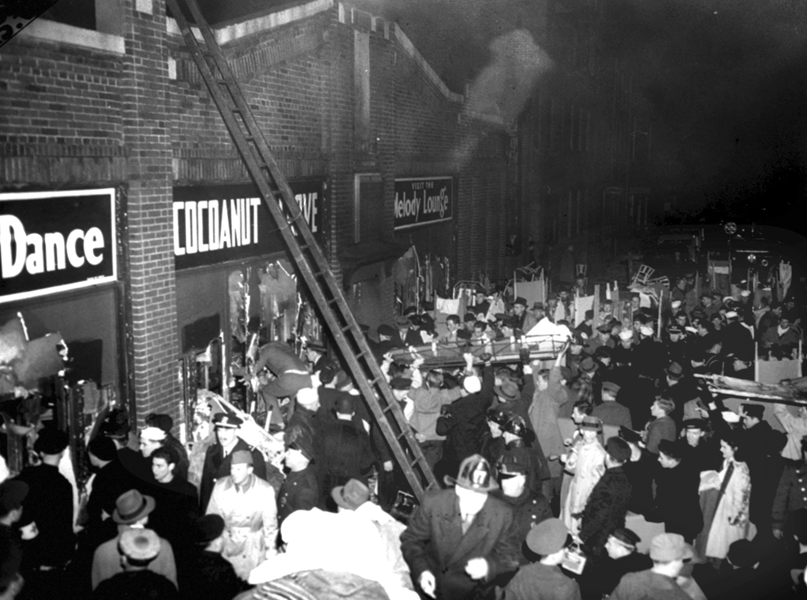

THE COCOANUT GROVE FIRE
A Crowded Celebration: On the night of November 28, 1942, the Cocoanut Grove in Boston—the city's premier nightclub—was packed with over 1,000 revelers, many of whom were celebrating a college football victory. The club was decorated with a lush "tropical" theme, featuring paper palm trees, cloth draperies, and rattan furniture. The basement level, known as the "Melody Lounge," was particularly crowded.

/>The Flashover: The fire began in the basement when a busboy reportedly lit a match to see a lightbulb he was trying to replace. Sparks ignited the artificial palm trees, and the fire traveled with terrifying speed across the ceiling, fueled by flammable gases released from the burning decorations. Within seconds, a "flashover" occurred—a wall of fire and toxic smoke swept through the stairs into the main dining room.
Key Facts
Date: November 28, 1942
Location: Boston, Massachusetts, United States
Casualties: 492 dead, hundreds injured; revolutionized fire safety codes and modern burn treatment.
Cause: A basement fire fueled by highly flammable decorations, exacerbated by locked or inward-opening exits and a jammed revolving door.
The Exit Trap: As the lights failed, panic ensued. The main entrance was a single revolving door that quickly became jammed as the frantic crowd pushed against it from both sides. Other emergency exits were either locked to prevent "dine and dashers," hidden behind curtains, or designed to open inward—making them impossible to open once the weight of the crowd pressed against them. Of the 1,000+ people inside, 492 perished, most from smoke inhalation and being crushed at the exits.
Lesson: The Cocoanut Grove fire is the second-deadliest single-building fire in U.S. history. The tragedy led to a total overhaul of fire codes, making it illegal to use flammable decorations in public spaces and mandating that revolving doors must be flanked by outward-opening swinging doors. Furthermore, the disaster led to major medical breakthroughs; because so many victims suffered from severe burns and lung damage, doctors at Massachusetts General Hospital pioneered the use of penicillin and "closed-surface" burn treatments, fundamentally changing modern emergency medicine.